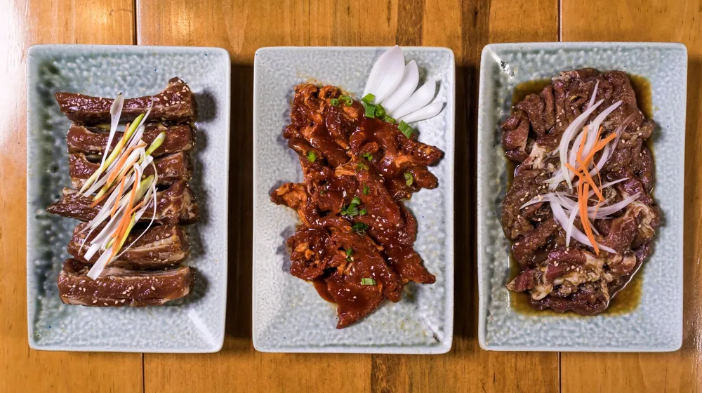

300년 내림손맛의 비밀, 지역별 대표 종가 시그니처 메뉴 완벽 비교
사진: Luis Becerra Fotógrafo / Pexels (무료 이미지, 출처 표기)
종가음식, 가문마다 다른 백년의 내림손맛

종가 음식을 단순히 '오래된 한식'으로만 생각하셨나요? 종가음식은 수백 년 동안 한 가문의 내림손맛과 지역 특산물, 그리고 독특한 조리법이 결합하여 전수된 하나의 살아있는 문화유산입니다. 최근에는 웰빙과 전통 식문화에 대한 관심이 높아지면서, 각 지역 종가만의 독창적인 시그니처 메뉴를 직접 경험하려는 발길이 늘고 있습니다. 농촌진흥청의 종가음식 보존 사업 등을 통해 대중에게 공개된 전국 대표 종가들의 대표 음식을 비교해 드립니다.
영남과 기호 지방의 대표 종가 시그니처 메뉴 비교
한국의 종가문화는 크게 영남 지방(경상도)과 기호 지방(경기도·충청도)으로 나뉩니다. 각 가문의 지리적 환경과 가풍에 따라 발달한 대표적인 시그니처 메뉴들을 표로 정리했습니다.
식재료와 조리법으로 보는 종가음식의 핵심 특징
각 종가의 시그니처 메뉴들은 가문의 생존 및 손님 대접(봉제사 접빈객) 역사와 깊이 맞닿아 있습니다.
첫째, 시간의 미학이 담긴 발효 기법입니다. 충남 논산의 명재고택처럼 오랜 세월 동안 매년 새로 담근 장에 기존 씨간장을 섞는 방식으로 가문 고유의 풍미를 유지합니다. 이는 현대 조미료로는 흉내 낼 수 없는 깊은 감칠맛을 냅니다.
둘째, 제철 지역 특산물의 극대화입니다. 영남 산간 지역인 안동의 설월당은 가지, 무 등 흔한 채소를 '누르미(즙을 끼얹어 만드는 조리법)'라는 독특한 고조리법으로 가공하여 귀한 손님상에 올렸습니다.
셋째, 치유와 약용을 겸한 식치(食治) 정신입니다. 음식을 단순히 배를 채우는 용도가 아닌, 몸을 다스리는 약으로 여겨 자극적인 양념을 배제하고 재료 본연의 맛을 살리는 데 집중했습니다.
종가 음식을 직접 체험하고 맛보는 현실적인 방법
전통 종가음식은 일반 식당처럼 아무 때나 방문해서 먹기 어렵습니다. 가문의 사생활 보호와 음식의 높은 완성도를 위해 철저한 예약제로 운영되기 때문입니다.
- 농가맛집 및 종가음식 전문 전수관 방문: 농촌진흥청이 지정한 '종가음식 전수관'이나 관련 농가맛집을 이용하면 예약 후 전문적인 종가 음식을 코스로 맛볼 수 있습니다.
- 고택 숙박 체험 연계: 논산 명재고택이나 안동의 여러 고택에서는 숙박 예약을 한 투숙객을 대상으로 전통 조반(아침상)이나 다도 체험을 제공합니다.
- 전통 식품 브랜드 구매: 직접 방문이 어렵다면 종가에서 직접 제조하여 온라인으로 판매하는 간장, 된장, 전통주(솔송주 등)를 구매해 가정에서 즐기는 것도 좋은 방법입니다.
방문 전 반드시 확인해야 할 주의사항
종가는 실제 후손들이 생활하는 주거 공간인 경우가 많으므로 방문 시 예의를 갖추는 것이 중요합니다.
우선, 대부분의 종가 체험과 식사는 최소 1~2주일 전 사전 예약이 필수입니다. 당일 방문 시 식사가 불가능한 경우가 대부분입니다. 또한 문화재로 지정된 고택이 많으므로 화기 사용이 엄격히 금지되며, 조용한 분위기를 유지해야 합니다. 2026년 기준 체험 프로그램의 운영 여부와 가격은 계절 및 문중 상황에 따라 변동될 수 있으므로, 방문 전 반드시 해당 종가나 지자체 문화관광 포털을 통해 확인하시길 권장합니다.
🔗 이 글도 함께 보면 좋아요: 클라우드 저장소 요금제 완벽 비교: 나에게 맞는 가성비 서비스는?
관련 추천 상품
이 포스팅은 쿠팡 파트너스 활동의 일환으로, 이에 따른 일정액의 수수료를 제공받습니다.
자주 묻는 질문(FAQ) (탭하면 펼쳐져요)
Q1. 일반인도 종가집에 직접 가서 식사를 할 수 있나요?
A. 대부분의 종가는 개인 거주 공간이므로 불쑥 방문해서 식사하는 것은 불가능합니다. 다만, 농촌진흥청이나 지자체와 연계된 종가음식 전수관, 고택 체험 프로그램 또는 사전에 예약된 '농가맛집'을 통해서만 제한적으로 식사 체험이 가능합니다.
Q2. 대표적인 종가음식 조리법인 '누르미'가 무엇인가요?
A. 누르미는 고기나 채소 등의 재료를 익힌 뒤, 그 위에 밀가루나 즙을 달여 만든 소스를 끼얹어 걸쭉하게 만드는 전통 조리법입니다. 조선 시대 조리서인 '수운잡방'에 자주 등장하는 대표적인 전통 요리 방식입니다.
Q3. 종가 음식을 온라인으로도 구매할 수 있나요?
A. 네, 명재고택의 전통 장류나 함양 일두고택의 솔송주 등 일부 명문 종가에서 생산하는 전통 장류, 한과, 가양주 등은 공식 홈페이지나 전통식품 쇼핑몰을 통해 온라인으로 쉽게 구매할 수 있습니다.
한눈에 보는 상품 목록
명재고택 전통 간장·된장 세트
300년 전통 씨간장의 깊은 맛을 이어받아 만든 프리미엄 전통 장류 세트입니다.
명인 안동 소주 및 가양주 세트
전통 방식을 고수하며 은은한 솔향과 깊은 풍미를 자랑하는 종가 내림 술입니다.
담양 창평 한과 약과 세트
양녕대군 후손 종가의 비법을 담아 쌀청 조청으로 깊은 단맛을 낸 전통 한과입니다.